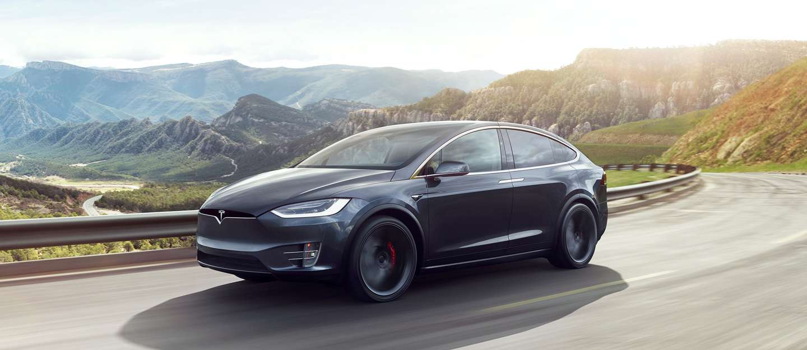

Tesla Model X — чотиридверний електромобіль, повнорозмірний SUV виробництва американської компанії Tesla Motors. Вперше був представлений дизайн-студією Tesla в Лос-Анджелесі 9 лютого 2012 року. Tesla Model X випускається на платформі повнорозмірного седана Tesla Model S на заводі Tesla в місті Фрімонт, штат Каліфорнія. Виробництво розпочалося в 2015 році. Комерційні поставки розпочалися із 29 вересня 2015 року.
За даними Управління з охорони навколишнього середовища США (EPA), заряду літій-іонного акумулятора ємністю 90 кВт·год вистачає на 489 км
Автомобіль Tesla Model X 2016 р.в. — це єдиний розкішний повністю електричний кросовер, нині представлений на ринку. Він доступний у трьох повнопривідних версіях: базовій 75D з батареєю на 75 кіловат-годин, більш потужній 90D з батареєю на 90 кіловат-годин та діапазоном пробігу у, майже, 415 кілометрів та продуктивній P90D. Автомобіль може вмістити від шести до семи пасажирів. Попередні версії були оснащені двома окремими задніми сидіннями, зараз усі моделі мають суцільне сидіння середнього ряду. Кросовер Tesla Model X 2016 вищий та об'ємніший ніж інші творіння компанії Tesla. Можливо тому йому бракує витонченості, якою був наділений його менший двійник — седан Model X. Його можна порівняти з ще одним представником компанії Tesla — Model S, проте кросовер Tesla Model X має набагато кращі вантажні здібності.
Стандартними для усіх моделей є: велике панорамне лобове скло, двері, які піднімаються, 17-дюймовий сенсорний екран з доступним 4G Інтернетом та 20-дюймові колеса з литими дисками. Всередині покупець знайде передні сидіння з 14 режимами налаштування та підігрівом, обшивку з штучної шкіри та тканини з дерев'яними вставками та аудіо систему на 9 динаміків. У автомобілях даного бренду покупець зустріне режим «Bioweapon Defense», більше відомий як фільтр повітря.
Власники авто Tesla мають змогу заряджати їх на надшвидких станціях Tesla Supercharger.
У серпні 2017 року з'явилося відео, на якому кросовер Tesla Model X модифікації P100 перемагає в заїзді на чверть милі (402 м) легендарний гоночний спорткар Lamborghini Aventador SV. Перевага становила 0,05 с. Tesla Model X P100D тепер офіційно найшвидший кросовер планети, дистанція була пройдена за 11,41 сек [4][5] 18 грудня 2019 року саме на цьому авто, оснащеному додатковим механізмом із коліщатками, возили гостей на представленні тестового тунелю Boring.